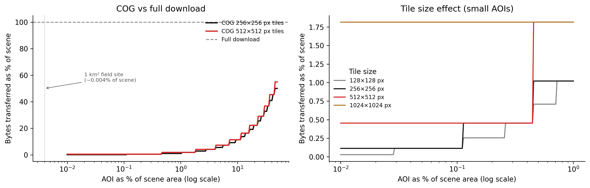

Object storage, cloud-optimised formats, and serving raster data at scale
5.1 The puzzle
A team at a research institute had been building a ten-year satellite imagery archive. Landsat 8 scenes, one per cloud-free day per path-row tile, covering a large river basin. About 4,000 scenes. Each scene stored as a full GeoTIFF — one file per band, projected to UTM, no overviews, no compression. Approximately 500 MB per scene.
A colleague wanted to analyse vegetation index trends over a 1 km² field site in the basin. The field site covers roughly 0.004% of a single Landsat scene footprint (185 km × 185 km ≈ 34,225 km²).
To get the time series, the pipeline needed to find the relevant pixel for each scene, extract the NIR and red band values, compute the index, and plot it over time. Four thousand scenes, two bands each.
The pipeline downloaded each full scene, extracted the pixel, and discarded the rest. Total data transferred: 4,000 scenes × 500 MB × 2 bands = 4 TB. Runtime on a fast university network connection: about 11 hours.
The colleague who rebuilt this pipeline using Cloud-Optimised GeoTIFF downloaded 40 MB to produce the same time series. The runtime dropped to under three minutes.
The difference is not a better algorithm. It is a different file layout — one that exposes the internal structure of the file to HTTP range requests, so a client can ask for exactly the bytes that cover the area of interest without downloading the rest.
5.2 Object storage: not a filesystem
Before getting to COG, it is worth being precise about what object storage is and is not. Most raster data at scale lives in object storage — S3, Google Cloud Storage, Azure Blob — and most of the assumptions engineers carry from local filesystem experience are wrong.
Object storage has three primitives: buckets, objects (keys), and byte ranges.
A bucket is a flat namespace. There are no directories. A key like imagery/2023/landsat8/LC09_L2SP_185033_20230615_scene.tif is just a string. The slashes are not directory separators — they are characters in the key name. Some object storage UIs render them as directories for convenience, but the underlying storage has no such structure. You cannot cd into a path. You cannot list “all objects in a directory” without a prefix scan, which is a different operation.
Objects are immutable once written. You cannot update bytes 500–600 of an existing object. You can only overwrite the whole object or create a new one. This eliminates the possibility of random writes — no patching, no appending. Formats that require in-place updates (many database file formats, some legacy GIS formats) are fundamentally incompatible with object storage.
HTTP range requests are the mechanism that makes cloud-native raster access possible. An HTTP GET request can include a Range header:
GET /bucket/scene.tif HTTP/1.1
Range: bytes=12800-25600
The server returns only the requested byte range, not the entire object. AWS S3, GCS, and MinIO all support this. GDAL’s /vsicurl/ virtual filesystem driver issues range requests transparently — a GDAL-aware client reading /vsicurl/https://mybucket.s3.amazonaws.com/scene.tif never downloads the full file unless it has to.
The size of the GDAL read depends on the internal layout of the file. For a naive GeoTIFF, the pixels are stored in scanline order from top to bottom. Reading a small spatial window near the bottom of the image requires either downloading the entire file, or issuing many small range requests spanning most of the byte range. Neither is efficient.
MinIO is an open-source S3-compatible object server. You run it locally or on your own infrastructure. Its API is identical to AWS S3, so any code that works against MinIO works against S3 without changes. Use it for development and for deployments where you own the infrastructure.
# Start a MinIO server (development, stores data in ~/minio-data)docker run -p 9000:9000 -p 9001:9001 \-v ~/minio-data:/data \-e MINIO_ROOT_USER=minioadmin \-e MINIO_ROOT_PASSWORD=minioadmin \ quay.io/minio/minio server /data --console-address":9001"
The MinIO console is at http://localhost:9001. The S3 API endpoint is http://localhost:9000. Any tool that accepts an S3 endpoint URL works against it.
5.3 Cloud-Optimised GeoTIFF
A Cloud-Optimised GeoTIFF (COG) is a regular GeoTIFF with two structural properties added: internal tiling and overviews, arranged so that the file header contains enough information to locate any tile without reading the body.
5.3.1 Internal tiling
A standard GeoTIFF stores pixels in scanlines — row by row. Reading a spatially compact window that spans many rows requires reading all the bytes between the first row of the window and the last. For a 10,000 × 10,000 pixel image, reading a 100 × 100 pixel window in the centre requires scanning through approximately half the file.
An internally tiled GeoTIFF divides the image into rectangular tiles — typically 256 × 256 or 512 × 512 pixels. Each tile’s bytes are stored contiguously. The file header contains a tile offset table: for each tile, the byte offset within the file where the tile’s data begins, and the tile’s compressed size.
Reading a 100 × 100 pixel window from a tiled file requires at most ceil(100/tile_size)² tile fetches. With 512-pixel tiles, that is 1 × 1 = 1 tile fetch — a few hundred kilobytes, not hundreds of megabytes.
5.3.2 Overviews
An overview (also called a pyramid level) is a downsampled version of the image stored within the same file. A Landsat scene might have overviews at 1/2, 1/4, 1/8, 1/16 of the native resolution. When a client requests a small area at low zoom, the COG driver reads from the appropriate overview level rather than from the full-resolution data. This avoids reading and downsampling millions of full-resolution pixels just to render a thumbnail.
5.3.3 Header-first layout
The critical property of a COG is that its Ghost Metadata and IFD (Image File Directory) structure — including the tile offset table and overview IFDs — is placed at the beginning of the file. A client can issue a single range request for the first few kilobytes of the file, parse the offset table, and then issue targeted range requests for exactly the tiles it needs.
For a standard GeoTIFF, the IFDs can be scattered throughout the file. The client cannot know where the needed tiles are without reading large portions of the file.
The GDAL COG creation driver ensures the header-first layout:
# Convert a standard GeoTIFF to COG# -of COG: use the COG output driver# -co COMPRESS=DEFLATE: compress tiles (LZW and ZSTD also common)# -co TILING_SCHEME=GoogleMapsCompatible: use 256x256 tiles, EPSG:3857# -co OVERVIEW_RESAMPLING=AVERAGE: resampling method for overviewsgdal_translate\-of COG \-co COMPRESS=DEFLATE \-co PREDICTOR=2 \-co OVERVIEW_RESAMPLING=AVERAGE \-co TILING_SCHEME=GoogleMapsCompatible \ input_scene.tif \ output_scene_cog.tif
Verify the result is a valid COG:
python-c"from osgeo import gdalds = gdal.Open('output_scene_cog.tif')md = ds.GetMetadata('MAIN_FILE')print(gdal.Info(ds, format='json')['driverLongName'])"# Or use the cogeo-mosaic validate tool:rio cogeo validate output_scene_cog.tif
5.3.4 GDAL /vsicurl/ and /vsis3/
GDAL virtualises remote access through prefix handlers. /vsicurl/ issues authenticated HTTP range requests. /vsis3/ handles AWS S3 authentication and endpoint resolution. Both are transparent to GDAL-aware tools — you pass a virtual path and GDAL handles the HTTP.
# Read metadata from a remote COG without downloading itgdalinfo /vsicurl/https://mybucket.s3.amazonaws.com/scene_cog.tif# Read a window from a remote COG (only tiles that overlap the window# are transferred)gdal_translate\-projwin 153.0 -27.0 153.1 -27.1\ /vsicurl/https://mybucket.s3.amazonaws.com/scene_cog.tif \ local_window.tif
The second command reads a 0.1° × 0.1° window. Depending on tile size and scene extent, this might fetch 2–4 tiles rather than the entire scene.
5.4 STAC: making data discoverable
Storing data as COGs in object storage solves the access problem. It does not solve the discovery problem: how does a client know which files exist, what they contain, and which one covers the area and time period of interest?
STAC — the SpatioTemporal Asset Catalog specification — is a JSON metadata standard that answers this question without requiring a centralised catalogue server or a spatial database query.
A STAC Item is a GeoJSON Feature with standardised additional fields: a timestamp, a bounding box, links to the actual data files (assets), and a properties dictionary with additional metadata.
{"type":"Feature","stac_version":"1.0.0","id":"LC09_L2SP_185033_20230615","geometry":{"type":"Polygon","coordinates":[[[144.2,-38.5],[150.1,-38.5],[150.1,-34.0],[144.2,-34.0],[144.2,-38.5]]]},"bbox":[144.2,-38.5,150.1,-34.0],"properties":{"datetime":"2023-06-15T01:34:22Z","platform":"landsat-9","instruments":["OLI","TIRS"],"constellation":"landsat","eo:cloud_cover":4.2,"landsat:wrs_path":185,"landsat:wrs_row":33,"proj:epsg":32755,"proj:shape":[7731,7591]},"assets":{"B04":{"href":"s3://my-imagery-bucket/landsat9/2023/LC09_185033_20230615_B04_cog.tif","type":"image/tiff; application=geotiff; profile=cloud-optimized","title":"Red Band (B4)","roles":["data"],"eo:bands":[{"name":"red","common_name":"red","center_wavelength":0.65}]},"B05":{"href":"s3://my-imagery-bucket/landsat9/2023/LC09_185033_20230615_B05_cog.tif","type":"image/tiff; application=geotiff; profile=cloud-optimized","title":"Near Infrared Band (B5)","roles":["data"],"eo:bands":[{"name":"nir08","common_name":"nir08","center_wavelength":0.865}]},"thumbnail":{"href":"s3://my-imagery-bucket/landsat9/2023/LC09_185033_20230615_thumb.png","type":"image/png","title":"Thumbnail","roles":["thumbnail"]}},"links":[{"rel":"self","href":"s3://my-imagery-bucket/stac/LC09_185033_20230615.json"},{"rel":"collection","href":"s3://my-imagery-bucket/stac/collection.json"}]}
A STAC Collection groups related Items and provides shared metadata (licence, description, spatial and temporal extent). A STAC Catalog is the root of the hierarchy, linking to collections and items.
The key architectural implication: a STAC catalogue can be a static set of JSON files in object storage, with no server required. A client that knows the root catalogue URL can traverse the link structure, filter by bounding box and datetime against the item bbox and properties.datetime fields, and find the relevant assets — all with plain HTTP GET requests to JSON files. No database. No API. No server to maintain.
Dynamic STAC APIs (like stac-fastapi) add server-side search over large catalogues. But for archives up to a few hundred thousand items, static STAC is often sufficient and operationally simpler.
5.5 Partitioning raster data
As an imagery archive grows, the question of how to organise files in object storage becomes significant. Object storage has no directories, but key prefixes function as a rough partitioning mechanism. The right partitioning strategy depends on the dominant access pattern.
Partition by time if queries are typically temporal: “all scenes from 2022”, “scenes from Q3 2023”. A prefix structure like imagery/{year}/{month}/{scene_id}.tif makes prefix-listing for temporal ranges efficient.
Partition by spatial tile if queries are typically spatial: “all scenes covering tile 55H” (MGRS grid) or “all scenes in path-row 185/033” (Landsat WRS). A prefix structure like imagery/{path}/{row}/{date}_{scene_id}.tif makes spatial prefix-listing efficient.
Partition by resolution level if you serve multiple zoom levels: store native resolution and overviews as separate files, organised by resolution tier. This is the approach used by commercial imagery platforms that serve both analysis-ready data and web map tiles from the same archive.
The tradeoff between file count and file size matters more in object storage than in a filesystem. Object storage is typically billed per request as well as per byte stored. An archive of one million 1 MB tiles is more expensive to list and access than an archive of 10,000 100 MB scenes, even if the total bytes are similar.
The practical recommendation: use tile sizes that match your access pattern. If analysts typically request full Landsat scenes, store scenes as COGs. If analysts typically request small spatial windows, consider mosaic COGs or GeoParquet that aggregates pixel data from multiple scenes.
5.6 COG range request efficiency: a model
The efficiency of COG range requests depends on the relationship between the area of interest (AOI) and the tile grid. In the best case, the AOI covers exactly one tile and the client fetches one tile. In the worst case, the AOI spans many tiles, and the client fetches all of them — potentially more data than a full scene download if the tiles include large amounts of data outside the AOI.
Code
import numpy as npimport matplotlib.pyplot as pltdef cog_bytes_fraction(aoi_fraction: np.ndarray, tile_px: int, scene_px: int) -> np.ndarray:"""Estimate fraction of scene bytes fetched by a COG range request. Model assumptions: - Scene is scene_px × scene_px pixels, stored as tiled COG. - AOI is a square region, axis-aligned with the scene. - Each tile is tile_px × tile_px pixels. - Tiles that overlap the AOI boundary are fully fetched. - Header overhead is assumed negligible (single range request, ~32 KB). The number of tiles fetched is ceil(aoi_side / tile_px)^2. The fraction of the scene covered by these tiles is (n_tiles * tile_px^2) / scene_px^2. """ aoi_side_px = np.sqrt(aoi_fraction) * scene_px n_tiles_per_side = np.ceil(aoi_side_px / tile_px) tiles_fetched = n_tiles_per_side **2 total_tiles = (scene_px / tile_px) **2return tiles_fetched / total_tilesscene_px =7600# approximate Landsat scene in pixels (30m res, ~228km)aoi_fractions = np.logspace(-4, np.log10(0.5), 200) # 0.01% to 50%fig, axes = plt.subplots(1, 2, figsize=(12, 4), dpi=150)# Left panel: COG vs full downloadax = axes[0]tile_sizes = [256, 512]colours = ["#111111", "#d52a2a"]for tile_px, colour inzip(tile_sizes, colours): frac = cog_bytes_fraction(aoi_fractions, tile_px, scene_px) ax.plot(aoi_fractions *100, frac *100, color=colour, linewidth=1.8, label=f"COG {tile_px}×{tile_px} px tiles")# Full download: always 100%ax.axhline(100, color="#888888", linestyle="--", linewidth=1.2, label="Full download")# Mark the field-site example (~0.004% of scene)ax.axvline(0.004, color="#888888", linewidth=0.7, linestyle=":")ax.annotate("1 km² field site\n(~0.004% of scene)", xy=(0.004, 50), xytext=(0.02, 55), fontsize=7.5, color="#555555", arrowprops=dict(arrowstyle="->", color="#555555", lw=0.7))ax.set_xscale("log")ax.set_xlabel("AOI as % of scene area (log scale)")ax.set_ylabel("Bytes transferred as % of scene")ax.set_title("COG vs full download")ax.legend(fontsize=8, frameon=False)ax.spines["top"].set_visible(False)ax.spines["right"].set_visible(False)# Right panel: tile size effect at small AOIsax2 = axes[1]small_aoi = np.logspace(-4, np.log10(0.01), 200) # 0.01% to 1%tile_sizes_all = [128, 256, 512, 1024]palette = ["#888888", "#111111", "#d52a2a", "#b07d2e"]for tile_px, colour inzip(tile_sizes_all, palette): frac = cog_bytes_fraction(small_aoi, tile_px, scene_px) ax2.plot(small_aoi *100, frac *100, color=colour, linewidth=1.5, label=f"{tile_px}×{tile_px} px")ax2.set_xscale("log")ax2.set_xlabel("AOI as % of scene area (log scale)")ax2.set_ylabel("Bytes transferred as % of scene")ax2.set_title("Tile size effect (small AOIs)")ax2.legend(title="Tile size", fontsize=8, frameon=False)ax2.spines["top"].set_visible(False)ax2.spines["right"].set_visible(False)fig.tight_layout(pad=1.5)plt.savefig("_assets/ch04-cog-efficiency.png", dpi=150, bbox_inches="tight")plt.show()

Figure 5.1: Figure 4.1. COG range request efficiency as a function of AOI size. Left: fraction of scene bytes transferred for a COG (tiled) versus a full-file download, across AOI fractions from 0.001% to 50% of the scene. The COG efficiency degrades as AOI size increases because more tiles must be fetched, including tile edges that extend beyond the AOI boundary. At very small AOI fractions, COG overhead is dominated by the header read and a small number of tiles. Right: effect of tile size on efficiency for small AOIs. Larger tiles are less efficient for small AOIs because each tile read includes more outside-AOI data.
Two things to read from this figure.
First, the efficiency gain from COG is enormous at small AOI fractions. For the 1 km² field site example (≈ 0.004% of a Landsat scene), a COG with 512-pixel tiles transfers roughly 0.03% of the scene — compared to 100% for a full download. This is where the 4 TB → 40 MB saving comes from in the opening puzzle.
Second, tile size is a genuine tradeoff. Smaller tiles (128 or 256 pixels) are more efficient for very small AOIs because the alignment overhead is smaller. Larger tiles (512 or 1024 pixels) are more efficient for large AOIs because there are fewer tile boundary crossings — but they are expensive for tiny AOIs because each tile contains a large fraction of outside-AOI data. The standard recommendation of 512 × 512 pixels is a reasonable default for mixed workloads.
TipWhat to try
Increase scene_px to 15,000 (representative of a Sentinel-2 scene at 10 m resolution). How does the efficiency curve change relative to the Landsat scene? Does the absolute number of bytes transferred for the 1 km² field site increase or decrease?
Try tile_size_px = 128 in the pyodide cell. For a very small AOI (0.001%), does the smaller tile size improve or worsen efficiency compared to 512? Why does the result depend on how many tile boundaries the AOI crosses?
Add an overview level to the model: assume the client reads the thumbnail overview (1/16 resolution) before deciding whether to fetch the full-resolution tiles. How many bytes does the overview read add? Is this overhead significant for AOIs smaller than 1% of the scene?
import numpy as npimport matplotlib.pyplot as plt# --- Try changing these parameters ---tile_size_px =512# Tile size in pixels (try 128, 256, 1024)n_overview_levels =4# Number of overview levels stored in the COGaoi_fraction =0.001# AOI as a fraction of total scene area (try 0.0001 to 0.5)scene_px =7600# Scene size in pixelsdef cog_bytes_fraction(aoi_frac, tile_px, s_px): aoi_side_px = np.sqrt(aoi_frac) * s_px n_tiles = np.ceil(aoi_side_px / tile_px) **2 total_tiles = (s_px / tile_px) **2return n_tiles / total_tiles# Overview footprint: each level is 1/4 the pixels of the previousoverview_fraction =sum( (1/4**i) for i inrange(1, n_overview_levels +1))aoi_fracs = np.logspace(-4, np.log10(0.5), 300)fig, axes = plt.subplots(1, 2, figsize=(12, 4))# Left: efficiency curve for chosen tile size + full downloadax = axes[0]cog_frac = cog_bytes_fraction(aoi_fracs, tile_size_px, scene_px)ax.plot(aoi_fracs *100, cog_frac *100, color="#d52a2a", linewidth=2, label=f"COG {tile_size_px}×{tile_size_px} px tiles")ax.axhline(100, color="#888888", linestyle="--", linewidth=1.2, label="Full download (100%)")ax.axvline(aoi_fraction *100, color="#111111", linewidth=0.8, linestyle=":")chosen_cog = cog_bytes_fraction(aoi_fraction, tile_size_px, scene_px) *100ax.annotate(f"Your AOI: {chosen_cog:.2f}% of scene", xy=(aoi_fraction *100, chosen_cog), xytext=(aoi_fraction *100*4, chosen_cog +15), fontsize=8, arrowprops=dict(arrowstyle="->", lw=0.8))ax.set_xscale("log")ax.set_xlabel("AOI as % of scene (log)")ax.set_ylabel("Bytes transferred (%)")ax.set_title("COG efficiency curve")ax.legend(fontsize=8, frameon=False)ax.spines["top"].set_visible(False)ax.spines["right"].set_visible(False)# Right: bar chart for chosen parametersax2 = axes[1]full_bytes =100.0cog_data_bytes = chosen_cogoverview_bytes = overview_fraction *100labels = ["Full download", "COG (data tiles)", "COG overviews"]values = [full_bytes, cog_data_bytes, overview_bytes]colours = ["#888888", "#d52a2a", "#b07d2e"]bars = ax2.bar(labels, values, color=colours, width=0.5)for bar, val inzip(bars, values): ax2.text(bar.get_x() + bar.get_width() /2, bar.get_height() +0.5,f"{val:.2f}%", ha="center", va="bottom", fontsize=8)ax2.set_ylabel("Bytes as % of scene")ax2.set_title(f"Bytes fetched for AOI = {aoi_fraction*100:.3f}%")ax2.spines["top"].set_visible(False)ax2.spines["right"].set_visible(False)fig.tight_layout(pad=2.0)plt.show()print(f"Tile size: {tile_size_px} × {tile_size_px} px")print(f"Scene size: {scene_px} × {scene_px} px")print(f"AOI fraction: {aoi_fraction*100:.4f}% of scene")print(f"COG data bytes: {cog_data_bytes:.3f}% of full scene")print(f"Overview bytes: {overview_bytes:.3f}% of full scene")print(f"Total COG bytes: {cog_data_bytes + overview_bytes:.3f}% of full scene")print(f"Speedup vs full: {100/ (cog_data_bytes + overview_bytes):.0f}×")
5.7 Exercises
4.1 — Object storage semantics
For each of the following operations, state whether it is possible in S3-compatible object storage, and if not, what the equivalent operation is:
Rename a file from imagery/old_name.tif to imagery/new_name.tif.
Append 100 bytes to the end of an existing object.
List all objects whose keys begin with imagery/2023/06/.
Read bytes 10,000–20,000 of an object without downloading the rest.
Create a directory called imagery/2023/.
4.2 — COG tile calculations
A Sentinel-2 band 4 (red) image at 10 m resolution covers a 100 km × 100 km tile. It is stored as a COG with 512 × 512 pixel tiles and DEFLATE compression.
How many pixels are in the full image?
How many tiles are in the full image?
A client requests a 500 m × 500 m AOI. How many tiles does the COG driver fetch, at minimum and at maximum (depending on alignment)?
If the native-resolution data is 200 MB uncompressed, and overviews add approximately 33% overhead (sum of a geometric series), what is the approximate total file size with overviews?
4.3 — STAC item design
A team is building a STAC catalogue for a drone survey archive. Each survey produces: - One RGB orthomosaic (GeoTIFF, COG) - One digital surface model (GeoTIFF, COG) - One ground control point file (CSV) - One flight log (JSON) - A JPEG thumbnail
Design a STAC Item for one survey. Specify: a. The id field and the naming convention. b. The geometry (what area should it represent?). c. The assets dictionary with appropriate type, roles, and title for each file. d. At least four properties in the properties dictionary that a search client might filter on.
4.4 — Partitioning strategy
A team ingests MODIS Terra daily surface reflectance data globally (about 460 × 10-degree tiles per day, going back to 2000). They have two primary access patterns: (1) researchers requesting all tiles for a specific region over a multi-year period; (2) an operational monitoring system that accesses the previous 30 days’ data for a regional subset.
Design an object key structure that makes access pattern (1) efficient.
Design an object key structure that makes access pattern (2) efficient.
These two structures are different. How would you serve both access patterns from a single archive? (Consider STAC and/or symbolic-link equivalents in object storage.)
5.8 Build this
The following sequence creates a COG from a raw GeoTIFF, uploads it to a local MinIO instance, and writes a STAC Item JSON for it.
5.8.1 Step 1: Create the COG
# Assumes input.tif is a raw GeoTIFF, single-band or multi-band,# in any coordinate reference system.# Step 1a: Reproject to EPSG:4326 if needed (skip if already in WGS84)gdalwarp\-t_srs EPSG:4326 \-r bilinear \-of GTiff \ input.tif \ input_wgs84.tif# Step 1b: Convert to COG with DEFLATE compression, 512x512 tiles,# and 4 overview levels (1/2, 1/4, 1/8, 1/16 of native resolution).gdal_translate\-of COG \-co COMPRESS=DEFLATE \-co PREDICTOR=2 \-co BLOCKSIZE=512 \-co OVERVIEW_RESAMPLING=AVERAGE \-co NUM_THREADS=4 \ input_wgs84.tif \ scene_cog.tif# Step 1c: Validate the COG structurepython-c"from osgeo import gdalds = gdal.Open('scene_cog.tif')info = gdal.Info(ds, format='json')print('Driver:', info['driverLongName'])print('Size:', info['size'])print('Overview levels:', len(info.get('bands', [{}])[0].get('overviews', [])))# Check IFD ordering (COG requirement: IFDs at start of file)md = ds.GetMetadataItem('IFD_OFFSETS', 'MAIN_FILE')print('IFD offsets (should start near 0):', md)"# Or use the cogeo-mosaic validatorpip install cogeo-mosaicrio cogeo validate scene_cog.tif
5.8.2 Step 2: Upload to MinIO
# Install the AWS CLI (it works with any S3-compatible endpoint)pip install awscli# Configure for MinIO (development)exportAWS_ACCESS_KEY_ID=minioadminexportAWS_SECRET_ACCESS_KEY=minioadminexportAWS_DEFAULT_REGION=us-east-1# Create a bucketaws--endpoint-url http://localhost:9000 s3 mb s3://my-imagery-bucket# Upload the COGaws--endpoint-url http://localhost:9000 s3 cp \ scene_cog.tif \ s3://my-imagery-bucket/landsat9/2023/LC09_185033_20230615_B04_cog.tif# Verify it is accessible via HTTP range requestcurl-H"Range: bytes=0-8191"\"http://localhost:9000/my-imagery-bucket/landsat9/2023/LC09_185033_20230615_B04_cog.tif"\|wc-c# Should print 8192 (the first 8 KB, containing the COG header and tile offsets)
5.8.3 Step 3: Write the STAC Item
# stac/write_item.py"""Construct a STAC Item from a COG file and write it to object storage.Requires: osgeo (GDAL), boto3, json, datetime.The item is written as a JSON file alongside the data asset."""from __future__ import annotationsimport jsonfrom datetime import datetime, timezonefrom pathlib import Pathimport boto3from osgeo import gdal, osrdef get_scene_bbox_and_shape(filepath: str) ->tuple[list[float], list[int]]:"""Read geographic bounding box and pixel dimensions from a GeoTIFF.""" ds = gdal.Open(filepath) gt = ds.GetGeoTransform() # (origin_x, pixel_w, 0, origin_y, 0, pixel_h) width = ds.RasterXSize height = ds.RasterYSize# Transform corners to WGS84 if not already src_srs = osr.SpatialReference() src_srs.ImportFromWkt(ds.GetProjection()) wgs84 = osr.SpatialReference() wgs84.ImportFromEPSG(4326) wgs84.SetAxisMappingStrategy(osr.OAMS_TRADITIONAL_GIS_ORDER) transform = osr.CoordinateTransformation(src_srs, wgs84) corners = [ (gt[0], gt[3]), # upper-left (gt[0] + width * gt[1], gt[3]), # upper-right (gt[0] + width * gt[1], gt[3] + height * gt[5]), # lower-right (gt[0], gt[3] + height * gt[5]), # lower-left ] lons_lats = [transform.TransformPoint(x, y)[:2] for x, y in corners] lons = [p[0] for p in lons_lats] lats = [p[1] for p in lons_lats] bbox = [min(lons), min(lats), max(lons), max(lats)] shape = [height, width]return bbox, shapedef build_stac_item( scene_id: str, cog_s3_key: str, bucket: str, endpoint_url: str, scene_datetime: datetime, platform: str="landsat-9", cloud_cover: float=0.0,) ->dict:"""Build a STAC 1.0 Item dict for a single-band COG.""" local_path =f"/tmp/{Path(cog_s3_key).name}"# Download just enough of the file to read the header s3 = boto3.client("s3", endpoint_url=endpoint_url, aws_access_key_id="minioadmin", aws_secret_access_key="minioadmin") s3.download_file(bucket, cog_s3_key, local_path) bbox, shape = get_scene_bbox_and_shape(local_path) min_lon, min_lat, max_lon, max_lat = bbox s3_uri =f"s3://{bucket}/{cog_s3_key}" http_url =f"{endpoint_url}/{bucket}/{cog_s3_key}" item = {"type": "Feature","stac_version": "1.0.0","id": scene_id,"geometry": {"type": "Polygon","coordinates": [[ [min_lon, min_lat], [max_lon, min_lat], [max_lon, max_lat], [min_lon, max_lat], [min_lon, min_lat], ]], },"bbox": bbox,"properties": {"datetime": scene_datetime.isoformat().replace("+00:00", "Z"),"platform": platform,"instruments": ["OLI"],"constellation": "landsat","eo:cloud_cover": cloud_cover,"proj:epsg": 4326,"proj:shape": shape, },"assets": {"B04": {"href": s3_uri,"alternate": {"https": {"href": http_url}},"type": "image/tiff; application=geotiff; profile=cloud-optimized","title": "Red Band (B4) — COG","roles": ["data"],"eo:bands": [{"name": "red","common_name": "red","center_wavelength": 0.65, }], }, },"links": [ {"rel": "self","href": f"s3://{bucket}/stac/{scene_id}.json","type": "application/geo+json", }, {"rel": "collection","href": f"s3://{bucket}/stac/collection.json","type": "application/json", }, ], }return itemdef write_stac_item(item: dict, bucket: str, endpoint_url: str) ->None:"""Write the STAC Item JSON to object storage.""" s3 = boto3.client("s3", endpoint_url=endpoint_url, aws_access_key_id="minioadmin", aws_secret_access_key="minioadmin") key =f"stac/{item['id']}.json" body = json.dumps(item, indent=2) s3.put_object( Bucket=bucket, Key=key, Body=body.encode(), ContentType="application/geo+json", )print(f"Written: s3://{bucket}/{key}")if__name__=="__main__": item = build_stac_item( scene_id="LC09_185033_20230615_B04", cog_s3_key="landsat9/2023/LC09_185033_20230615_B04_cog.tif", bucket="my-imagery-bucket", endpoint_url="http://localhost:9000", scene_datetime=datetime(2023, 6, 15, 1, 34, 22, tzinfo=timezone.utc), platform="landsat-9", cloud_cover=4.2, )print(json.dumps(item, indent=2)) write_stac_item(item, "my-imagery-bucket", "http://localhost:9000")
The result is a COG file accessible via HTTP range requests from MinIO, with a STAC Item JSON that a client can use to discover it — band metadata, bounding box, datetime, and a direct link to the asset. Add a STAC collection JSON and a root catalogue JSON to complete a static STAC catalogue that can be hosted on any S3-compatible storage with no server required.